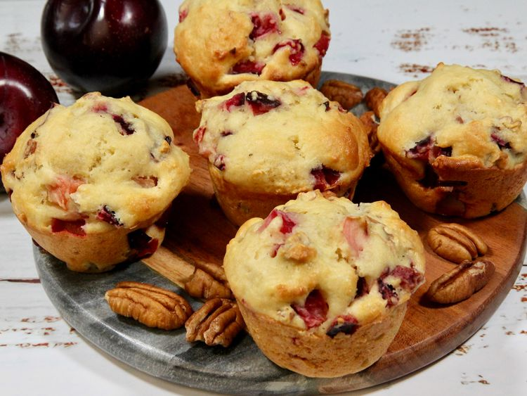

Plum and Pecan Muffins

A bite of Plum and Pecan Muffins
These plum and pecan muffins are loaded with fruit, so you’ll
get a taste of plum in every bite. The pecans and ginger bring
additional layers of flavor to the sweet, ripe plums.
Ingredients
- 2 cups all-purpose flour
- 1/2 cup white sugar
- 2 teaspoons baking powder
- 1 teaspoon ground ginger
- 1/2 teaspoon baking soda
- 1 pinch salt
- 1 cup plain Greek yogurt (such as Fage® 2%)
- 1/2 cup orange juice
- 2 large eggs
- 1/4 cup melted unsalted butter
- 1 teaspoon vanilla extract
- 2 cups diced pitted plums
- 1/2 cup chopped pecans
Procedure
- Preheat the oven to 350 degrees F (180 degrees C). Spray a 12-cup
standard muffin tin with cooking spray or line with paper liners.
- In a large bowl, stir together flour, sugar, baking powder,
ginger, baking soda, and salt.
- In a separate bowl, whisk yogurt, orange juice, eggs, butter,
and vanilla until well combined.
- Make a well in the center of dry ingredients; pour yogurt mixture
into well and stir just until batter is combined. Gently fold in plums
and pecans. Evenly spoon batter into the prepared muffin tin cups.
- Bake in the preheated oven until muffins are golden and a toothpick
inserted near the center comes out clean, 20 to 25 minutes.
- Allow muffins to cool in the pan for 5 minutes, then remove to a wire
rack to cool completely.